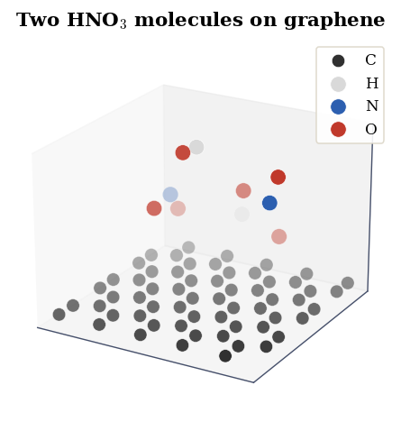
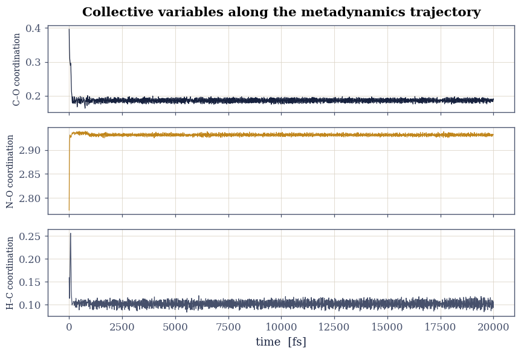
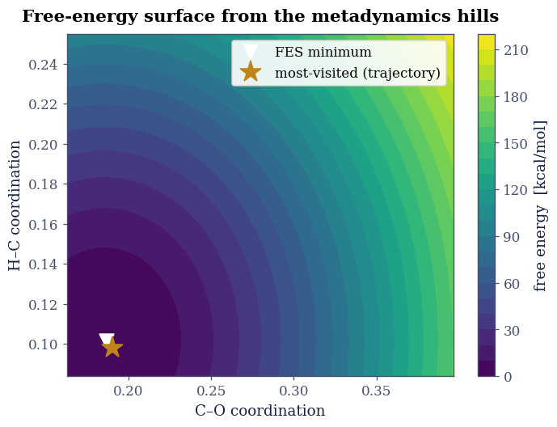

6.3 Metadynamics: Nitric Acid on Graphene#
from ecp.style import header, use_style
use_style()
header(
volume="Volume VI — Reactions and Free Energy",
number="6.3",
title="Metadynamics: Nitric Acid on Graphene",
blurb="Filling the valleys to map the mountains: metadynamics deposits a running "
"bias along chosen collective variables to push a system out of its basins, and the "
"accumulated bias reconstructs the free-energy surface of nitric acid interacting "
"with a graphene sheet.",
difficulty="advanced",
estimate="90–120 min",
source="FS 2023 · Lecture 14 (metadynamics and collective variables)",
)
Notebook overview#
Ordinary molecular dynamics is trapped by barriers: a rare event like a bond breaking may never happen on a simulable timescale. Metadynamics breaks the trap. It picks a few collective variables (CVs), coordinates that describe the slow motion of interest, and periodically deposits a small repulsive Gaussian hill at the system’s current position in CV space. The growing bias fills up whatever basin the system sits in, eventually floating it over the barrier, and the sum of all the hills, inverted, is the free-energy surface.
This is the course’s exercise on metadynamics, applied to two nitric-acid molecules
over a graphene sheet, with the fast and cheap density-functional tight-binding
(DFTB) method for the forces. We take the course’s committed output: the trajectory of
the collective variables (the COLVAR log) and the list of deposited hills (the
HILLS log). We render the system, follow the collective variables as the bias drives
the exploration, and reconstruct the free-energy surface by summing the hills.
Provenance. This notebook develops Lecture 14 of the course (metadynamics, collective variables, and free-energy surfaces). The structure (
grly5x3_2hno3.xyz) and the metadynamics logs (COLVAR,HILLS) are the course’s own committed CP2K/DFTB results from a short “simple metadynamics” run. The full course credit is in the footer.
Reading a validation. Each task closes with a check against an independent fact: the composition of the system, that the bias actually drove exploration, that the reconstructed surface is consistent with where the trajectory went. A ✗ flags a mismatch; a ✓ is strong evidence, not proof.
Scope. This is a deliberately short teaching run, so the free-energy surface is qualitative, the bias filling the explored basin rather than fully converging a barrier. Energies are the committed values (Hartree, to kcal/mol). For the method see Laio & Parrinello [LP02].
Theory in brief#
Collective variables#
A collective variable \(s(\mathbf R)\) is a function of the atomic coordinates chosen to capture the slow degree of freedom, here coordination numbers: a smooth count of how many atoms of one type lie within a cutoff of another (C–O between graphene and the acid, N–O within the acid, H–C for a hydrogen approaching the sheet). Coordination numbers vary continuously as bonds form and break, which makes them good reaction coordinates.
The metadynamics bias and the free-energy surface#
Every \(\tau\) steps a Gaussian of height \(W\) and width \(\sigma\) is added to the bias at the current CV value \(\mathbf s_t\):
The bias accumulates in the basins the system visits, raising their floor until the system spills into the next basin. In the long-time limit the bias becomes the inverse of the underlying free energy, so the free-energy surface is reconstructed simply by summing the deposited hills and flipping the sign, \(F(\mathbf s) \approx -V(\mathbf s)\).
Setup#
import os
import numpy as np
import matplotlib.pyplot as plt
from ecp import validate
INK, AMBER, SOFT = "#16213e", "#c0851a", "#46506b"
HARTREE_KCAL = 627.503
CPK = {"H": "#d9d9d9", "C": "#303030", "O": "#c0392b", "N": "#2c5fb0"}
CV_NAMES = ["C–O coordination", "N–O coordination", "H–C coordination"]
def data_file(name):
"""Locate a shipped data file from the repo root (CI) or the notebook dir (Colab)."""
for base in ("data", os.path.join("notebooks", "06-reactions-free-energy", "data")):
path = os.path.join(base, name)
if os.path.exists(path):
return path
raise FileNotFoundError(name)
def read_xyz(name):
lines = open(data_file(name)).read().splitlines()
n = int(lines[0].split()[0])
els = [ln.split()[0] for ln in lines[2:2 + n]]
xyz = np.array([[float(v) for v in ln.split()[1:4]] for ln in lines[2:2 + n]])
return els, xyz
Exercise 1 — The system#
The course placed two nitric-acid molecules above a sheet of graphene, 60 carbon atoms plus the two \(\mathrm{HNO_3}\), and ran DFTB molecular dynamics. We render the committed structure: the flat hexagonal carbon lattice with the small acid molecules hovering above it. Density-functional tight binding is what makes this affordable, an approximate, parametrised electronic structure that is orders of magnitude faster than full DFT, fast enough for the long biased trajectory metadynamics needs.
Part a) Render the graphene + nitric-acid system. Part b) Confirm its composition (a carbon sheet plus two HNO₃).

Fig. 49 The committed metadynamics system: a graphene sheet (60 carbon atoms, grey) with two nitric-acid molecules above it (nitrogen blue, oxygen red, hydrogen white). The forces come from density-functional tight binding, cheap enough for the long biased trajectory.#
composition: 60×C, 2×H, 2×N, 6×O
Validation 1 — graphene plus two nitric-acid molecules#
The system must be a carbon sheet (many C) with exactly the atoms of two HNO₃: two N, six O, two H.
validate.check(
counts.get("C", 0) >= 50 and counts.get("N") == 2 and counts.get("O") == 6 and counts.get("H") == 2,
"the system is graphene plus two nitric-acid molecules",
f"composition {counts}",
)
✓ the system is graphene plus two nitric-acid molecules [composition {'C': 60, 'H': 2, 'N': 2, 'O': 6}]
True
Exercise 2 — The collective variables over time#
The COLVAR log records the three collective variables at every step. Plotting them
against time (Assignment 3) shows metadynamics at work: the bias progressively pushes
the system away from where it has already been, so the CVs wander over a growing range
rather than fluctuating around a fixed point as they would in plain dynamics.
Part a) Load COLVAR and plot the three CVs against time. Part b) Confirm the
bias has driven each CV over a finite range.

Fig. 50 The three collective variables (coordination numbers) along the metadynamics trajectory, from the committed COLVAR log. Driven by the accumulating bias, each variable explores a range of values rather than settling, the signature of metadynamics pushing the system through configuration space.#
CV explored ranges: {'C–O coordination': np.float64(0.234), 'N–O coordination': np.float64(0.165), 'H–C coordination': np.float64(0.171)}
Validation 2 — the bias drove exploration#
Metadynamics must move the system: every collective variable has to explore a finite range over the run, not sit at a single value.
validate.check(
bool(np.all(cv_ranges > 0.05)),
"all three collective variables explore a finite range",
f"ranges {cv_ranges.round(3)} (CV units)",
)
✓ all three collective variables explore a finite range [ranges [0.234 0.165 0.171] (CV units)]
True
Exercise 3 — Reconstructing the free-energy surface#
The HILLS log lists every deposited Gaussian: its centre in CV space, its widths,
and its height. Summing them and flipping the sign reconstructs the free-energy surface
Eq. 37 (Assignment 4). We project onto two of the variables, the C–O and H–C
coordinations that describe the acid approaching and bonding to the sheet, and contour
the result. The minimum marks the most-visited configuration; because this is a short
run the surface maps the explored basin rather than a fully converged barrier.
Part a) Load HILLS and reconstruct the 2-D free-energy surface. Part b)
Confirm its minimum coincides with where the trajectory spent the most time.

Fig. 51 Free-energy surface of the nitric-acid/graphene system, reconstructed by summing the metadynamics hills over the C–O and H–C coordination numbers (kcal/mol, relative to the minimum). The basin (dark) is the configuration the short run explored; the trajectory’s most-visited point (amber marker) sits in it, confirming the reconstruction. A longer run would extend the surface to neighbouring basins and the barriers between them.#
FES minimum at (0.19, 0.10); most-visited at (0.19, 0.10)
Validation 3 — the surface is consistent with the trajectory#
Metadynamics fills the basins it visits, so the reconstructed free-energy minimum must
coincide with where the trajectory actually spent its time, a consistency check
between the HILLS reconstruction and the independent COLVAR trajectory.
span = np.hypot(np.ptp(cv[:, a]), np.ptp(cv[:, b]))
validate.check(
agreement < 0.25 * span,
"the reconstructed FES minimum sits where the trajectory spent the most time",
f"FES min ↔ most-visited distance = {agreement:.3f} ({100*agreement/span:.0f}% of the explored span)",
)
✓ the reconstructed FES minimum sits where the trajectory spent the most time [FES min ↔ most-visited distance = 0.005 (2% of the explored span)]
True
Going further#
Convergence. A converged free-energy surface needs the bias to grow flat; the short run here does not reach that. Well-tempered metadynamics shrinks the hills over time and converges cleanly.
Choosing CVs. The result is only as good as the collective variables: a CV that misses the true slow mode leaves a hidden barrier. The exercise’s four candidate CVs (coordination numbers and a point-to-plane distance) are a study in that choice.
The dissociation. With a longer run the H–O bond of nitric acid breaks and the proton transfers, the dissociation the exercise is named for, appearing as a second basin across a barrier in the H–C coordination.
Reweighting. The deposited bias can be used to reweight the trajectory back to unbiased ensemble averages of other observables.
References#
Alessandro Laio and Michele Parrinello. Escaping free-energy minima. Proceedings of the National Academy of Sciences, 99(20):12562–12566, 2002. doi:10.1073/pnas.202427399.
from ecp.style import footer
footer()